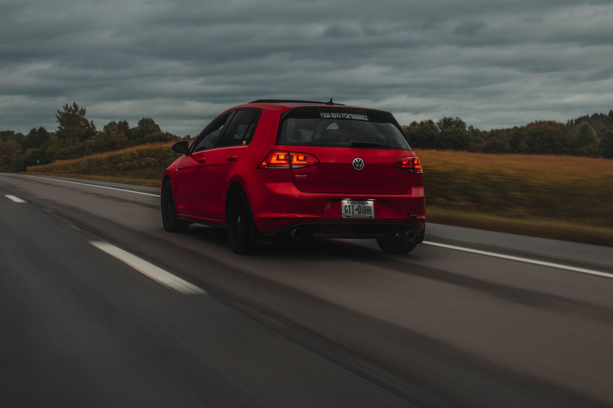
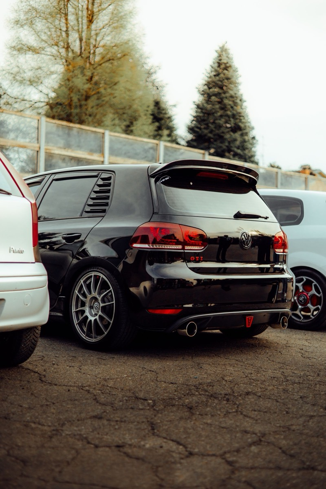
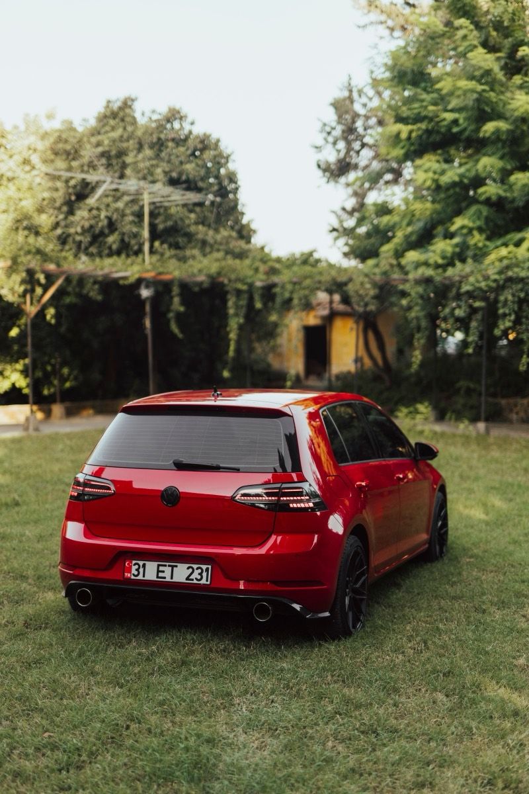

Golf GTI: MK7 vs MK8 vs MK8.5, Generation by Generation
The Golf GTI's headline numbers barely moved across three generations, and two of the published test scorecards say the newest car is the slowest of the three to 60 — while the same magazine's track test says it is the fastest. Both statements are true at once, and the gap between them is the most u
The MK8’s extra 21 hp comes mostly from calibration and turbo, not displacement — both cars are 2.0 litres. Every MK8 is a seven-speed DCT; the MK7 offered a six-speed manual.
APR’s own notice removes Stage 2 for everyone, which makes the MK7 the better-supported platform for anyone planning beyond a basic tune.
The Golf GTI’s headline numbers barely moved across three generations, and two of the published test scorecards say the newest car is the slowest of the three to 60 — while the same magazine’s track test says it is the fastest. Both statements are true at once, and the gap between them is the most useful thing to understand before you buy a used GTI or budget a tune.
Every figure below was read from Car and Driver’s own instrumented tests on 16 November 2026, plus Volkswagen’s and APR’s published data. Nothing here is a manufacturer estimate relabelled as a measurement.
The three cars, tested
| 2015 MK7 | 2022 MK8 | 2025 MK8.5 | |
|---|---|---|---|
| Power | 220 hp @ 4700 | 241 hp @ 6500 | 241 hp @ 6500 |
| Torque | 258 lb-ft @ 1500 | 273 lb-ft @ 1600 | 273 lb-ft @ 1600 |
| Gearbox | 6-speed manual | 7-speed DCT | 7-speed DCT |
| Curb weight | 3105 lb | 3154 lb | 3293 lb |
| 0–60 mph | 5.8 sec | 5.1 sec | 5.6 sec |
| ¼-mile | 14.4 @ 100 | 13.6 @ 105 | 14.2 @ 100 |
| Braking, 70–0 | 163 ft | 151 ft | 158 ft |
| Skidpad | 0.91 g | 0.97 g | 0.91 g |
| Top speed | 124 mph (gov) | 155 mph (mfr) | 129 mph (gov) |
Read down the columns and the shape of the story is obvious: the MK8 was a genuine step up, and the MK8.5 gave a chunk of it back. Against the 2022 car, the refreshed 2025 is half a second slower to 60, seven feet longer stopping from 70, and 0.06 g down on the skidpad — with identical power, identical torque, and identical brake hardware at 13.4 inches front and 12.2 inches rear. It also gained 139 lb.
Two honest caveats, because they matter and nobody prints them.
The 2015 test predates the rollout convention Car and Driver uses now. Both the 2022 and 2025 figures state that results “omit 1-ft rollout of 0.3 sec”; the 2015 sheet carries no such note, so its 5.8 seconds may not be measured to the same standard as the other two. Treat the MK7 row as indicative and the MK8/MK8.5 comparison as like-for-like.
And the 2015 car was a Performance package example — 220 hp rather than the standard 210, with the larger brakes and the limited-slip differential. The standard MK7 was slower than the number in that table, not faster.

The track result disagrees with the drag strip
Here is where it stops being a simple regression story.
Car and Driver runs the same car at Virginia International Raceway every year in Lightning Lap, and that test is far longer and more revealing than a 0–60 pull. The two MK8 cars:
| 2022 MK8 | 2025 MK8.5 | |
|---|---|---|
| Lap time | 3:12.1 | 3:11.3 |
| Weight as run | 3311 lb | 3285 lb |
| Tires | Hankook Ventus S1 evo3 | Hankook Ventus S1 evo3 |
The 2025 car was eight tenths quicker around VIR than the 2022 car, on the same tire model, while recording a worse skidpad and a longer stop from 70.
That combination is not a contradiction so much as a lesson about what these tests measure. The skidpad is one steady-state circle, and the 70–0 stop is one number from one surface on one day. A full lap averages four miles of braking, turn-in and corner exit, where a car with better body control and a more cooperative gearbox can win by eight tenths while losing a single-number test.
It also tells you the two generations are close enough that a single test day can decide the result. If you are choosing between a 2022 and a 2025 on the basis of a tenth, you are choosing on noise. Note too that the Lightning Lap weights do not match the road-test curb weights in either direction — 3293 lb in the road test versus 3285 lb at VIR for the same model year is a difference of option load and fuel, which is why the lap time is the more comparable figure.

What actually changed, and what did not
The engine is the least changed part of the story. All three cars are the same 2.0-litre turbocharged four, and the MK8’s extra 21 hp over the MK7 comes mostly from calibration and turbo, not from a redesign. Both MK8 generations make exactly the same 241 hp and 273 lb-ft, which is why the road-test gap between them is weight and tires rather than power.
The gearbox is the change that actually alters the car. The MK7.5’s manual is gone. The 2015 car was a six-speed manual; every MK8 is a seven-speed dual-clutch. Car and Driver’s 2025 verdict is blunt about it: “Despite missing a core ingredient, the GTI remains a great hot hatch.”
The brakes did not change at all across the two MK8s — 13.4-inch vented front and 12.2-inch vented rear on both — so the seven-foot difference in stopping distance is tire condition, pad compound and surface, not hardware.
The dimensions barely moved either. Wheelbase is 103.6 inches on the MK7 and the 2025, 103.4 on the 2022. The MK8.5 is actually half an inch lower than the 2022 at 57.7 inches against 58.2.

The part nobody compares: which one you can legally tune
This is the table that decides it for a lot of buyers, and it has nothing to do with lap times.
Both MK8 generations use the EA888 evo4 engine with a Simos 19 ECU. APR — one of the largest VW tuners in the US, based in Opelika, Alabama — publishes the California status of each calibration on the product page. Read on 16 November 2026:
| APR Stage 1 | CARB status | |
|---|---|---|
| MK7 (EA888 Gen 3) | 290–337 hp, 320–375 lb-ft | Has a CARB Executive Order |
| MK8/MK8.5 (EA888 Gen 4) | up to 328–478 hp | NOT LEGAL FOR SALE OR USE IN CALIFORNIA |
The MK8 page states it directly: “This product is NOT LEGAL FOR SALE OR USE IN THE STATE OF CALIFORNIA. Testing with the California Air Resources Board, in order to achieve 50-state compliance, is pending with CARB.”
The MK7 upgrade, at $502.95, carries an EO and documents it — APR’s own FAQ answers “We have a CARB EO on this tune” to a customer asking whether it will pass a California smog check. The MK8 upgrade is $592.95 and cannot be sold into California at all.
So the car with the better road-test scorecard is the one you cannot legally tune in the largest car market in the country, and the older generation is the one with a 337 hp street-legal calibration on file. If you live in California and intend to tune, that single fact outweighs half a second to 60.
Check APR's ECU upgrades by model year → CARB status read 16 Nov 2026
APR’s own notice kills Stage 2 for everyone
One line buried in APR’s site footer applies regardless of which generation you buy, and almost nobody reads it:
“Software tuning requiring or supporting the removal of factory-equipped emissions control systems (often referred to as ‘Stage 2’ for turbocharged vehicles) is not available for the US market.”
That is the tuner saying its Stage 2 is not sold in the US at all. It matches APR’s product page, which lists Stage 1, APR Plus, Stage 2, Stage 3 IS38, and Stage 3 DTR6054 in the navigation — but the footer notice is the one that tells you what can actually be shipped.
The practical consequence: the traditional “downpipe plus Stage 2” path is not a route a US tuner will sell you. The downpipe you can buy; the calibration that goes with it is the part that has been withdrawn. Budget a Stage 1 and stop, or accept that the next step is hardware rather than software.
What a downpipe alone is worth
The MK7’s catted downpipe is the most-reviewed power part in the Golf’s aftermarket — MAP’s $499.99 catted downpipe carries 106 reviews on MAPerformance, read 16 November 2026. That volume says people buy it, and it is the correct first hardware step on a turbo car because the factory downpipe is the restriction behind the turbo, not the cat-back.
Read MAP’s own listing for the emissions position and you find this, verbatim: “This direct replacement catted version helps eliminate some of the harmful emissions so you don’t have to worry about legalities or excessive pollution (check your local and state laws to be sure)” and a second line: “Sound level and emissions laws vary based on location. Please consult your local authorities.”
That is not a CARB claim, and it should not be read as one. A catted downpipe that keeps a high-flow converter is a different legal object from a catless one, but neither is automatically California-legal, and the listing does not assert an EO number anywhere on the page. If you are in California, verify the EO on the part before you buy it.
The intake question, and the same trap
The MK8 APR intake ($358.95, list $399.95) is the natural first bolt-on, and its page carries the identical warning: “Testing with the California Air Resources Board, in order to achieve 50-state compliance, is pending with CARB. Once testing is complete with California, and an E.O. number is issued, this product will be updated to 50-state legal status.”
So on the MK8 you have an intake and a tune that are both pending CARB, and on the MK7 you have a tune with an EO on file. That asymmetry is the single most useful thing in this article for a California buyer, and it is invisible in every 0–60 comparison on the internet.
See GTI intakes with fitment and prices → prices checked 16 Nov 2026
So which generation should you buy
If you want the fastest car as delivered, the 2022–2024 MK8 is the one. It has the best road-test numbers of the three and it is eight tenths off the MK8.5 around VIR rather than ahead of it, which means the two are effectively tied on track while the 2022 wins every single-number test.
If you intend to tune and you live in California, the MK7 is the car with a legal 337 hp calibration available today. That is a real, documented advantage, not a hypothetical one, and it is worth more than the MK7’s older chassis.
If you want a manual, only the MK7 and MK7.5 have one. That decides it for some people before any of the numbers above get read.
If you are buying the 2025 expecting the best of everything, budget for what it actually is: the same engine as the 2022, more weight, the same brakes, and a quicker lap. It is a good car. It is not a faster one on paper, and the paper is worth reading before you pay for the newest model year.
The one thing that does not change across any of them is where the money goes first. On a turbo four, the downpipe and the calibration are the power. The cat-back is the sound. Buying them in the other order is the most common way GTI owners spend twice.
Sources
Instrumented test data and Lightning Lap results read from Car and Driver on 16 November 2026:
- 2015 Volkswagen GTI Tested: The Seventh-Gen Sets a High Bar — MK7 road test, Performance package, 220 hp.
- 2022 Volkswagen Golf GTI by the Numbers — MK8 road test.
- Tested: 2025 Volkswagen Golf GTI Is Still Great Without the Stick — MK8.5 road test.
- 2022 Volkswagen Golf GTI Autobahn at Lightning Lap 2022 — 3:12.1.
- 2025 Volkswagen Golf GTI at Lightning Lap 2026 — 3:11.3.
Tuning and CARB status read from APR on 16 November 2026:
- APR ECU Upgrade, 2.0T EA888 Gen 3 IS20 (MK7) — $502.95, 290–337 hp, 320–375 lb-ft, CARB EO stated.
- APR ECU Upgrade, 2.0T EA888 Gen 4 (MK8) — $592.95, up to 328–478 hp, “NOT LEGAL FOR SALE OR USE IN THE STATE OF CALIFORNIA”, CARB testing pending.
- APR Intake System, MK8 (CI100052) — $358.95, CARB testing pending.
- APR site footer notice, quoted verbatim in the Stage 2 section above.
Parts read from MAPerformance on 16 November 2026:
- MAP Catted Downpipe, Mk7/7.5 GTI (VWMK7-DP) — $499.99, 106 reviews.
Two limits worth stating plainly. The 2015 test does not carry the “omit 1-ft rollout” note the 2022 and 2025 sheets do, so the MK7 row is not guaranteed to be measured to the same standard. And no EO number is printed here for any part: the APR pages state that an EO exists for the Gen 3 calibration without listing its number, so verify the EO on the product documentation before relying on it.
Topics
- Engine & Intake